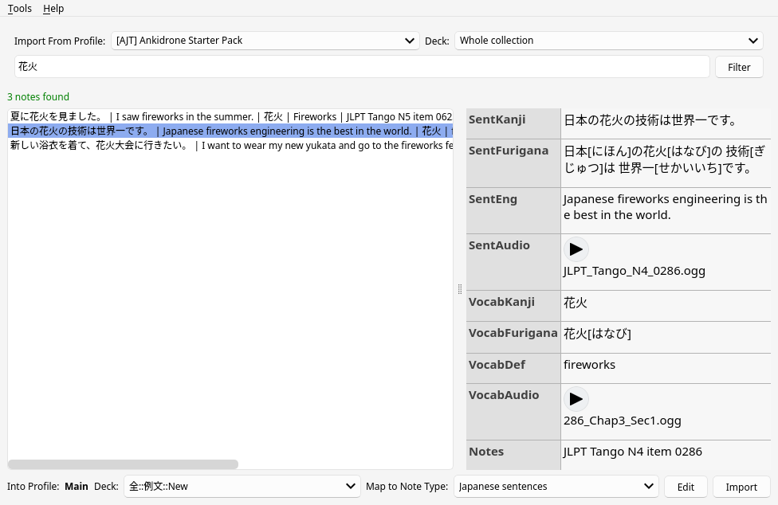
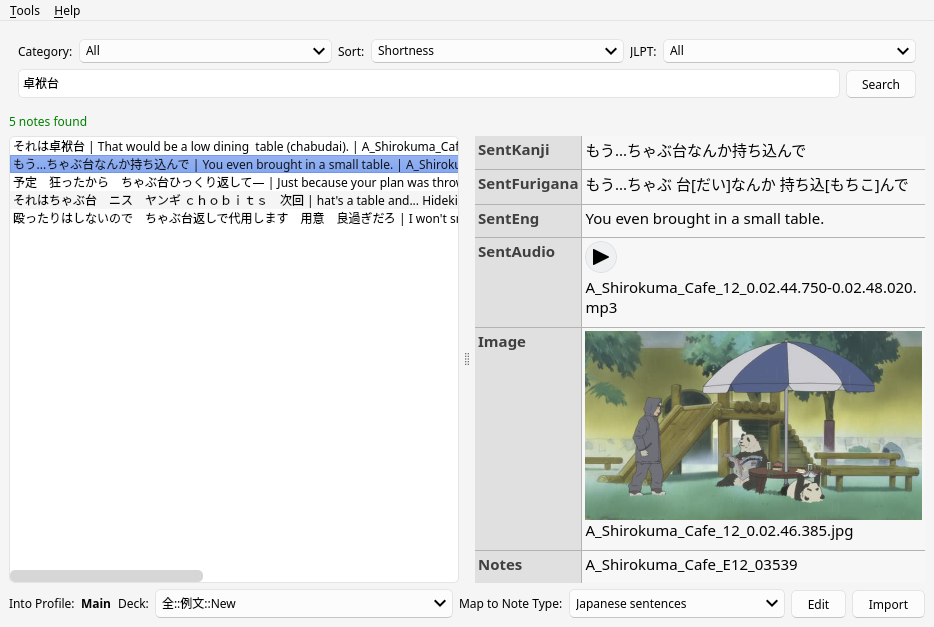

Cross Profile Search And Import
Примечание: Обратите внимание, что эта статья ещё не переведена полностью. Если вы хотите помочь, присоединяйтесь к нашему сообществу и создайте pull request на GitHub.
The Cross Profile Search and Import add-on is a tool that helps you maintain a neat, uncluttered main profile while still having access to an extensive sentence bank. This tool allows you to store your sentence bank in a separate profile which is not synchronized with AnkiWeb, and then easily search and import cards into your main profile when required. In doing so, it keeps your main profile tidy while sparing AnkiWeb servers from hefty media uploads.
Prerequisites
Before proceeding, ensure that you have installed Anki. Follow this guide to set it up.
Installation
The first step is to install the Cross Profile Search and Import add-on. Follow standard procedures for adding extensions onto Anki.
- Open the "Install Add-on" dialog by selecting "Tools" > "Add-ons" > "Get Add-ons..." in Anki.
- Input
1772763629into the text box labeledCodeand press the OK button to proceed. - Restart Anki when prompted to do so in order to complete the installation.
Sentence banks
There is software to automatically create flashcards from whole series of TV shows with subtitles, such as subs2srs. It creates a large “sentence bank”, which you can then use to select cards to study by searching for words that you want to learn. Sentence banks are useful when there's a word you want to learn, but you don't have a 1T example sentence to create a targeted sentence card. You then use the bank to find a suitable sentence.
Setup
You need at least one extra Anki profile to get started. Open Anki, go to "File" > "Switch Profile" > "Add" and create the profile to store your sentence bank. Then you need to fill the profile with decks that you generate from anime, movies and TV shows you have watched or plan to watch. You can also keep premade decks in your sentence bank.
Typically, the size of a decent sentence bank reaches several GiB, so you don't want to keep it in your main Anki profile that you sync with AnkiWeb. That would cause unnecessary long sync times and irrational utilization of the AnkiWeb disk space.
Decks from the Internet
To expand your sentence bank further, download decks from the Internet. There are many shared folders where people upload their sentence banks. You can find some of them in Resources below.
Decks from different people will inevitably have different formatting. Convert all of them to one note type in order to make working with the bank easier.
Media formats
One issue people often encounter is that many subs2srs decks
include audio files in MP3 format and images in JPG format.
To save disk space,
you'll likely want to bulk-convert the audio files to Opus
and the image files to either WebP or AVIF.
To convert the files in your Anki collection,
you can use AJT Media Converter.
This add-on converts JPG images to WebP or AVIF,
and MP3 audio files to OGG/Opus.
Another option is to call ffmpeg
in the collection.media directory after importing a deck.
-
Import a subs2srs deck, then open your terminal and
cdinto thecollection.mediadirectory. Example:cd ~/.local/share/Anki2/<PROFILE>/collection.media -
Use an ffmpeg script to convert all the media files in this directory. I use cm. Run the commands as follows:
cm ftogg cm ftswebpThese two commands will take care of all
mp3andjpgmedia files. -
In the Anki Browser, click "Notes" > "Find and Replace..." to replace all occurrences of
.mp3with.oggand all occurrences of.jpgwith.webp.
Configuration
Once you have Cross Profile Search and Import installed, navigate to "AJT" > "Cross Profile Search and Import" > "Tools" > "Add-on options". There you can change a number of settings to suit your needs. Each setting can be hovered over in order to show a tooltip that explains what does.
To be able to see all the cards available without doing a search, click on "Local search" and enable the "Allow empty search" checkbox. You can use this if, for example, you have only pictures on your cards and can not do a word search.
Usage
- Select the source profile (import from profile) and deck to search in.
- Select the destination deck and the Note Type to map the new notes to.
- Use the search bar for querying specific words or phrases.
- Choose notes that cater exactly to what you need and hit "Import".

Screenshot.
Web search
The add-on lets you search cards on the Internet. To do so it will connect to a remote server that contains a relatively large public sentence bank and send your search queries there. The server that the add-on connects to is not affiliated with Ajatt-Tools.
Press "Tools" > "Search the web" to enable the feature.

Web search.
Keyboard Shortcuts
- Alt+T Tools menu.
- Alt+H Help menu.
- Ctrl+K Focus the search bar.
- Ctrl+L Focus the list of notes.
- Ctrl+I Import.
- Ctrl+Left Arrow Flip page to the left.
- Ctrl+Right Arrow Flip page to the right.
Conclusion
The Cross Profile Search and Import add-on is a versatile tool for working with sentence banks. With its user-friendly interface, customizable settings, and web search capabilities, this add-on greatly simplifies the process of moving targeted sentence cards and makes studying more efficient and effective.